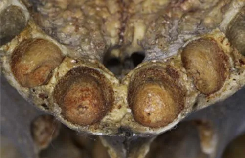
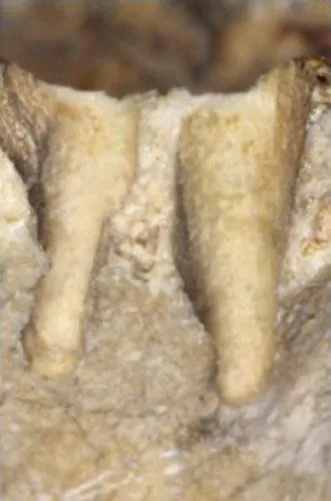

نسخه استخراجشده؛ ترجمه یا تأیید علمی انجام نشده است. وضعیت: captured
ترمیم ساکت یک فرایند پنجمرحلهای با زمانبندی مشخص است. و ارزش دانستن این زمانبندی این است که تقریباً هر تصمیم بعدی — زمان پیوند، زمان کاشت، محدودیت پروتز موقت — از آن بیرون میآید.
مرحلهی ۱ — گرانولاسیون. پس از کشیدن دندان، لختهی اولیهای درون ساکت تشکیل میشود که از کوآگولوم گلبولهای قرمز و سفید ساخته شده. تقریباً در روز سوم، کوآگولوم بهآرامی با بافت گرانولاسیون بسیار پرعروق جایگزین میشود. بافت گرانولاسیون در بازهی ۴ تا ۵ روز جای لخته را میگیرد.
لخته شروع به جمع شدن میکند و مویرگها سینوزوئید و بافت گرانولاسیون میسازند — از آپکس ساکت شروع میشود و در امتداد دیوارهها به سمت جانبی و کرستال گسترش مییابد.
مرحلهی ۲ — آنژیوژنیک اولیه. تقریباً یک هفته پس از کشیدن شروع میشود. رگزایی از انتهای پارهشدهی رگهای لیگامان باقیمانده روی صفحهی کریبریفرم شکل میگیرد و فیبروپلازی آغاز میشود. با چند استثنا، رگزایی از کف ساکت شروع میشود، چون این ناحیه کمتر آسیب دیده و بیشترین رگ را دارد.
و در همین بازه، بافت نرم اطراف محل شروع به رشد روی لخته میکند و ظرف ۲ تا ۳ هفته محل کشیدن دندان را میپوشاند.
مرحلهی ۳ — تشکیل استخوان اولیه. تقریباً در ۳ تا ۴ هفتگی، بافت گرانولاسیون با بافت همبند جایگزین میشود.
و نکتهی مهم همین مرحله: در این مرحله، استخوان کورتیکال ناحیهی کرستال ساکت شروع به بازجذب میکند — بههمراه نواحی بینسپتال و صفحهی فاسیال نازکتر. یعنی از دست رفتن تیغهی باکال، یک رخداد زمانبندیشده است، نه یک تصادف.

مرحلهی ۴ — رشد استخوان. تقریباً ۴ تا ۶ هفته پس از کشیدن شروع میشود. ترابکولهای استخوانی تازه روی دیوارهها شکل میگیرند و در ۴ تا ۵ هفتگی تقریباً دو سوم ساکت پر میشود. در حدود ۶ هفتگی، ترابکولهای استخوانی تقریباً بهطور کامل ساکت را پر میکنند.
مرحلهی ۵ — بازسازماندهی استخوان. از حدود ۶ هفته پس از کشیدن شروع میشود.
و مدت کل ترمیم: این دوره معمولاً ۳ تا ۶ ماه طول میکشد — بسته به اندازهی دندان، تعداد ریشهها و میزان تروما حین کشیدن. توجه کن که تروما حین کشیدن در این فهرست است: تکنیک تو مستقیماً بر مدت ترمیم اثر میگذارد.
در محلهای پیوندشده، معمولاً زمان ترمیمی در بازهی ۴ تا ۸ ماه لازم است.
نشانهی رادیوگرافیک کامل شدن ترمیم: صفحهی کریبریفرم (لامینا دورای دیوارههای ساکت) دیگر در رادیوگرافی دیده نمیشود.
سه تصمیم که مستقیماً از این زمانبندی میآیند:
۱. تأخیر پیوند. در ساکت با عفونت حاد (ترشح چرکی یا فیستول)، دندان بدون مادهی پیوند کشیده میشود و پیوند استخوان دستکم ۸ هفته به تعویق میافتد تا احتمال عفونت گرافت کاهش یابد.
۲. محدودیت پروتز موقت. پروتز متحرک انتقالی نباید در ۶ تا ۸ هفتهی اول پس از کشیدن، بافت را بارگذاری کند؛ وگرنه گرافت — بهویژه گرافت کامپوزیت در تکنیک socket seal — ممکن است متحرک شود و سکستره کند.
۳. تسریع با پریوست سالم. در تکنیک socket seal، گرافت کامپوزیت (هستهی استخوان اتوژن همراه پریوست و بافت همبند متصل به آن) منتقل میشود. انتقال این گرافت با لایهی پریوستئال دستنخورده، عروقیشدن مجدد را تسریع میکند و ممکن است زمان ترمیم را کاهش دهد — در نتیجه ورود مجدد ممکن است در ۴ تا ۵ ماه انجام شود و کاشت ایمپلنت با قطر ایدهآل اغلب ممکن گردد.

نوع سؤال: ساخت کلمه · 9 خانه
حروف منبع: ی · ک · آ · ژ · ن · ی · و · ژ · ن